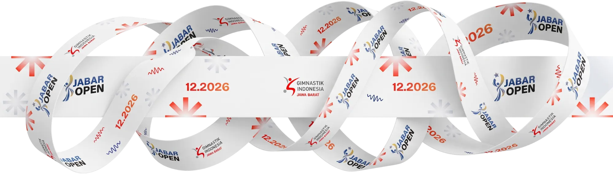
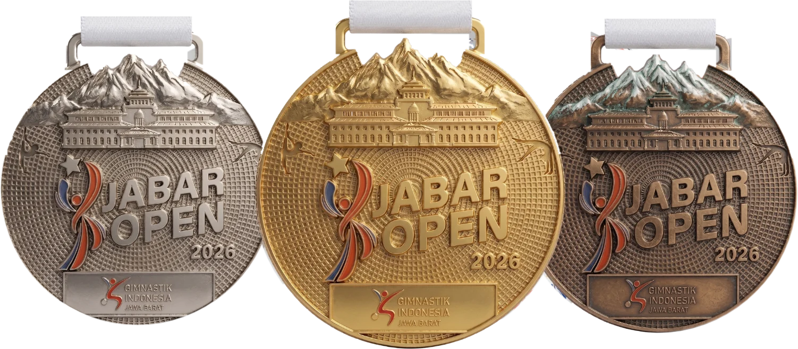

Sportivitas
Setiap atlet tampil di arena, jadwal, dan penjurian yang sama, dengan Code of Points FIG sebagai acuan. Menghormati lawan, juri, dan hasil adalah bagian dari pertandingan itu sendiri.


Kejuaraan gimnastik terbuka12–20 Desember 2026 · Bandung

Artistik Putra, Artistik Putri, Ritmik, dan Aerobik bertemu di Gymnasium Arcamanik. Terbuka untuk sekolah, klub, perkumpulan, dan atlet perorangan dari seluruh Indonesia maupun mancanegara.



Mengapa kita bertanding
Kompetisi adalah cermin yang jujur. Latihan berbulan-bulan diuji dalam satu rutinitas, dinilai dengan aturan yang sama untuk semua, lalu menjadi bekal untuk langkah berikutnya. Jabar Open hadir untuk menyediakan cermin itu bagi pesenam Jawa Barat dan Indonesia.
Setiap atlet tampil di arena, jadwal, dan penjurian yang sama, dengan Code of Points FIG sebagai acuan. Menghormati lawan, juri, dan hasil adalah bagian dari pertandingan itu sendiri.
Medali hanya untuk tiga besar, tetapi nilai berlaku untuk semua. Setiap skor menunjukkan dengan jelas apa yang sudah dikuasai dan apa yang perlu dilatih lagi. Jam terbang di kompetisi resmi adalah bagian dari pembinaan.
Gimnastik membangun kemampuan gerak dasar: kekuatan, kelenturan, keseimbangan, koordinasi, dan kesadaran tubuh. Fondasi ini terbawa ke hampir semua cabang olahraga lain, karena itu gimnastik disebut ibu dari semua olahraga.
Tace et ostende.Ad astra per aspera.
Diam dan buktikan. Menuju bintang, melalui jalan yang terjal.
Tentang kejuaraan
Jabar Open 2026 adalah kejuaraan gimnastik terbuka tingkat nasional yang diselenggarakan Gimnastik Indonesia (GI) Jawa Barat. Pendaftaran, verifikasi pembayaran, start list, dan hasil resmi dikelola melalui situs ini.
ALP Level 1–4 dan Junior (CoP), serba bisa perorangan. Alat: lantai, kuda pelana, gelang-gelang, meja lompat, palang sejajar, palang tunggal. Maksimal 10 pesenam per kategori per klub.
ALP Level 1–6, Pre Junior, dan Junior (CoP), serba bisa perorangan. Alat: meja lompat, palang bertingkat, balok keseimbangan, lantai. Musik Level 4–6 disediakan panitia.
Kategori Profesional dan Amatir untuk KU 5–6, 7–8, 9–10, 11–12, dan Junior. Nomor sesuai kelompok umur: tanpa alat, simpai, bola, gada, pita. Kelompok umur memakai sistem festival.
Junior (15–17) dan Youth (12–14): perorangan putra, perorangan putri, pasangan campuran. National Development (9–11) dan Pre National Development (6–8): perorangan putra dan putri. Langsung babak final.
Jadwal
Jadwal sementara. Sesi, grup, dan urutan tampil setiap atlet diumumkan di halaman start list setelah pendaftaran ditutup.
Jadwal dapat berubah. Tidak ada registrasi ulang di lokasi: pantau start list dan Instagram @gimnastikjabar untuk pengumuman resmi.
Pendaftaran
Daftar perorangan atau sebagai klub dan sekolah (hingga lima atlet sekaligus). Biaya per atlet atau per pasangan, dibayar sekali lewat QRIS.
Semua atlet bertanding di arena, jadwal, dan penjurian Jabar Open yang sama. Atlet WNI beralamat (sesuai identitas) di Jawa Barat dari klub di Jawa Barat dapat memilih Priangan saat mendaftar. Hasil mereka diperingkat ulang di antara peserta Priangan untuk penghargaan dan tabel medali tersendiri.
Siapkan: foto atau PDF identitas atlet (KTP, akta kelahiran, ijazah, atau paspor) dan data orang tua/wali untuk atlet di bawah 18 tahun. Peserta wajib memiliki BPJS atau asuransi sesuai Undangan. Batas pendaftaran dan pembayaran: 12 November 2026.

Pendaftaran atlet dibuka
Ukir namamu di podium Gymnasium Arcamanik. Daftar sendiri atau bersama klub, bayar sekali, dan terima e-ticket untuk setiap atlet.
Foto: Antara News
Jabar Open 2025
Sekilas penyelenggaraan sebelumnya: keberanian di atas matras, pelatih di pinggir arena, dan kebersamaan yang ingin kami hadirkan lagi di Arcamanik.


Merchandise resmi
Segera hadir
Koleksi resmi Jabar Open 2026 sedang kami siapkan. Dirancang dari identitas kejuaraan dan dibuat dalam jumlah terbatas, untuk atlet, pelatih, keluarga, dan siapa saja yang ingin membawa pulang sepotong cerita dari arena.
 Pratinjau koleksi
Pratinjau koleksi

Akun resmi Gimnastik Indonesia Jawa Barat di Instagram. Pengumuman, start list, dan momen dari arena dibagikan di sana lebih dulu.
Hubungi kami
Pertanyaan tentang pendaftaran, pembayaran, atau data atlet dikirim lewat email. Pertanyaan teknis per disiplin dapat diajukan ke narahubung masing-masing lewat WhatsApp.
Sertakan kode pendaftaran (JO26-…) agar pertanyaan Anda cepat ditangani.
Kirim emailGymnasium Arcamanik, Bandung · 12–20 Desember 2026